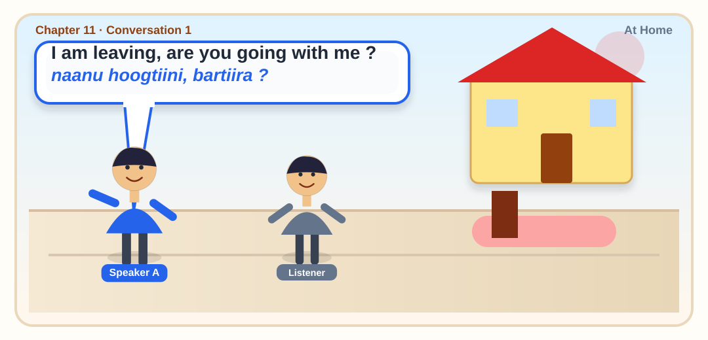

Conversation 1 · At Home
I am leaving, are you going with me ?
ನಾನು ಹೊರಡುತ್ತಿದ್ದೇನೆ, ನೀವು ನನ್ನೊಂದಿಗೆ ಬರುತ್ತೀರಾ?
Naanu horaduttidene, neevu nondige barutteera?
Original PDF: naanu hoogtiini, bartiira ?
